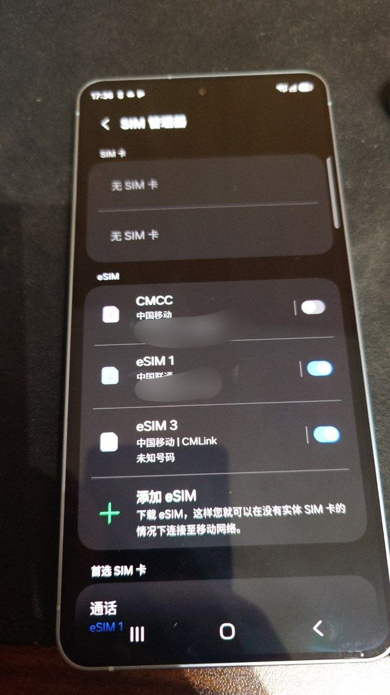
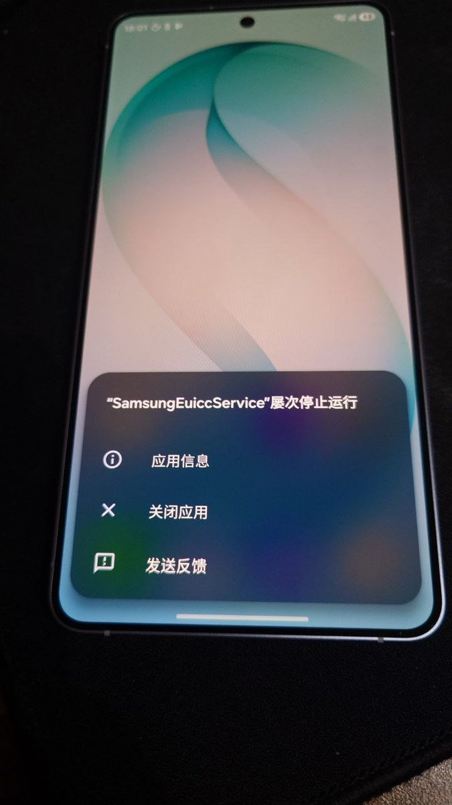

据不可靠消息，三星要在下一个版本溶丝S26系列，届时将会出现拒绝降级的情况。目前出厂的固件售后无法下载，需要工厂权限才能获取，建议暂时关闭系统更新。
有朋友实测S26+在写满2张国内eSIM后通过Odin刷入港版（国行和港澳台通刷）后，三星Euicc出现crash崩溃。目前推断原因是三星的EuiccServiceImpl在把profile list回传给Android framework之前，会对ICCID做格式校验，它只接受纯数字字符（0-9）。而中国移动的ICCID包含F，并使用 F 作为填充字符（filler digit）遇到 F 就直接抛 IllegalArgumentException，而这个异常没有被 catch，导致整个服务 crash。
从One UI 8.5后，Odin已转移到维护模式中，可以提前连接好数据线，在设置-智能管理器-更多-打开维护模式，自动重启后同时按住音量加减（±）进入Odin模式。一般来说刷港版就好了，切勿刷入台湾固件，台版会屏蔽SA、北斗，甚至有奇怪的bug。
有朋友实测S26+在写满2张国内eSIM后通过Odin刷入港版（国行和港澳台通刷）后，三星Euicc出现crash崩溃。目前推断原因是三星的EuiccServiceImpl在把profile list回传给Android framework之前，会对ICCID做格式校验，它只接受纯数字字符（0-9）。而中国移动的ICCID包含F，并使用 F 作为填充字符（filler digit）遇到 F 就直接抛 IllegalArgumentException，而这个异常没有被 catch，导致整个服务 crash。
从One UI 8.5后，Odin已转移到维护模式中，可以提前连接好数据线，在设置-智能管理器-更多-打开维护模式，自动重启后同时按住音量加减（±）进入Odin模式。一般来说刷港版就好了，切勿刷入台湾固件，台版会屏蔽SA、北斗，甚至有奇怪的bug。

